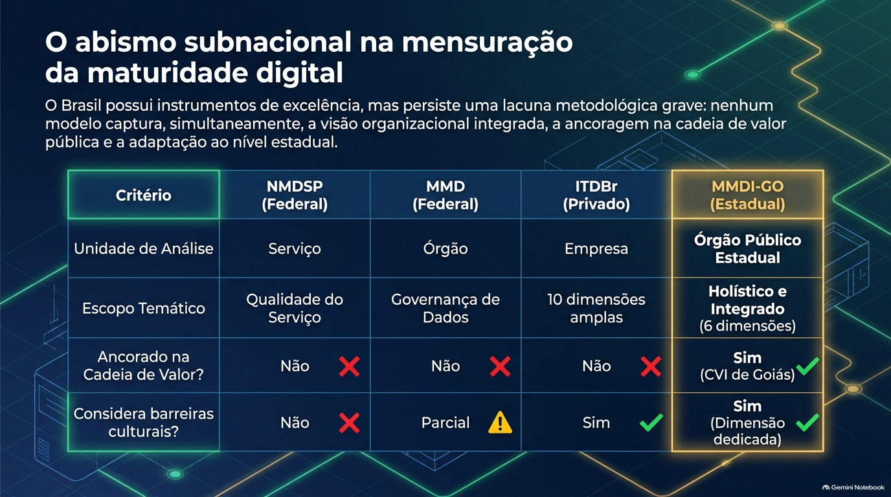
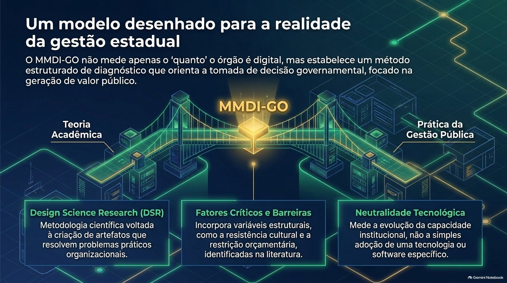
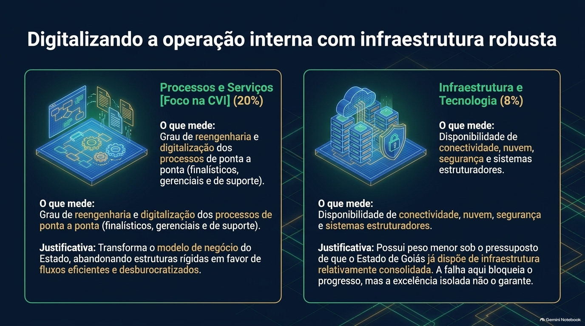
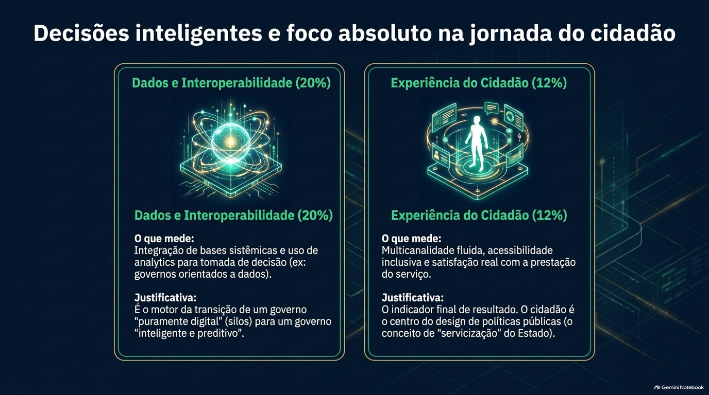
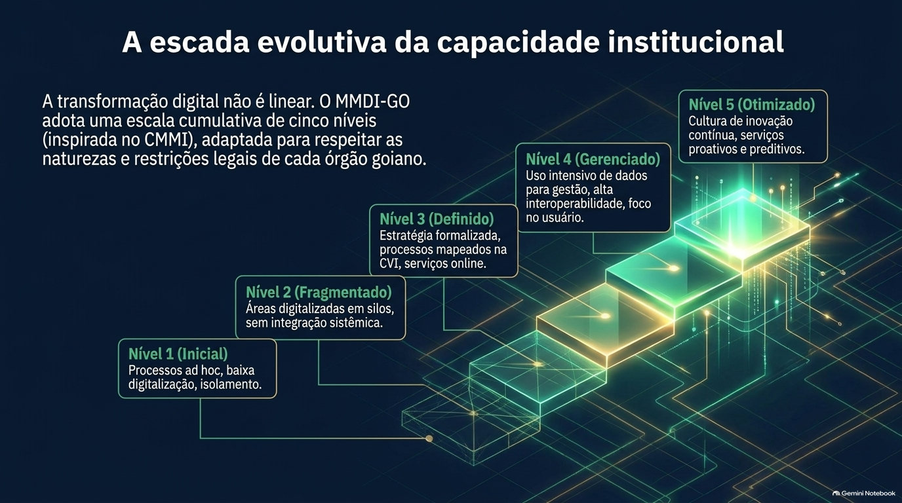
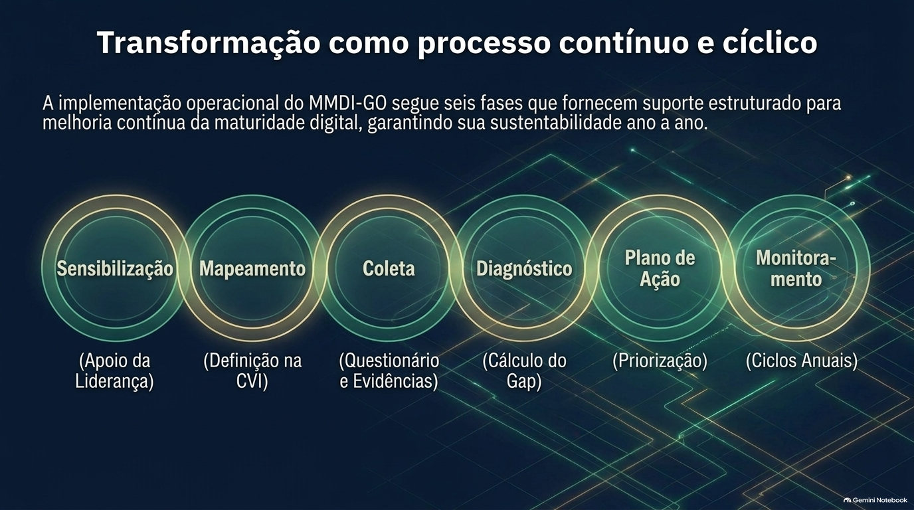
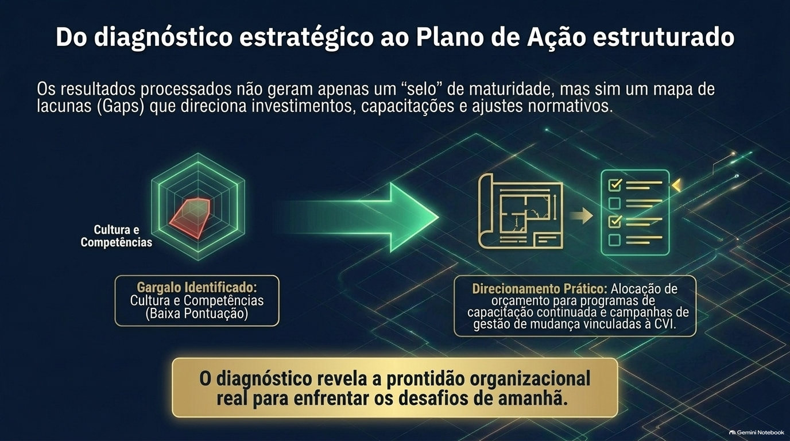

Do que trata o artigo
Goiás priorizou a digitalização de serviços, mas não tem um instrumento padronizado para medir a evolução digital dos seus órgãos. O artigo propõe, em caráter preliminar, o Modelo de Maturidade Digital Integrado de Goiás (MMDI-GO), um framework e uma metodologia de medição para a administração pública estadual.
Com base na Design Science Research, o modelo reúne seis dimensões de maturidade, num contínuo de cinco níveis, e traz regras de cálculo e um questionário diagnóstico de 24 itens. A Cadeia de Valor Integrada delimita o escopo e contextualiza a leitura dos resultados por camada de processos.
O artefato passou por avaliação teórica e por um exemplo ilustrativo de cálculo, e ainda não foi validado empiricamente. Os pesos das dimensões são iniciais e dependem de calibração por especialistas.
Pergunta e objetivos
Pergunta de pesquisa
Como estruturar um modelo de maturidade digital para órgãos públicos estaduais que integre capacidades digitais, arquitetura de processos e entrega de valor público, considerando as especificidades institucionais do Estado de Goiás?
Quatro objetivos específicos
- Sistematizar, a partir da literatura e de documentos institucionais de Goiás, os fatores críticos de sucesso e as barreiras organizacionais da transformação digital no setor público.
- Integrar as dimensões de maturidade digital à Cadeia de Valor Integrada, abrangendo processos finalísticos, gerenciais e de suporte.
- Desenvolver um instrumento diagnóstico preliminar, com indicadores, itens, regras de agregação e uma escala de cinco níveis.
- Oferecer uma base teórico-metodológica para uma aplicação piloto futura.
A lacuna subnacional na medição da maturidade
O Brasil tem instrumentos consolidados, mas nenhum, entre os examinados, desenhado para o órgão público estadual.

O Nível de Maturidade Digital de Serviços Públicos (NMDSP), instituído pela Portaria SGD/MGI nº 1.083/2025, tem o serviço público como unidade de análise e é aplicado a mais de cinco mil serviços do Poder Executivo federal, com reavaliação semestral.
O Modelo de Maturidade de Dados (MMD) orienta órgãos federais na governança e na gestão de dados, por autoavaliação.
O Índice Transformação Digital Brasil (ITDBr), da PwC com a Fundação Dom Cabral, mede a maturidade de empresas em dez dimensões, numa escala de 1 a 6.
Cada instrumento trata de uma unidade de análise diferente: o serviço, o domínio de dados ou a empresa. Entre os examinados no estudo, nenhum oferece, ao mesmo tempo, visão organizacional integrada, ancoragem em cadeia de valor pública e adaptação ao nível estadual.
A literatura consultada trata da mensuração de resultados da transformação digital (Dobrolyubova, 2021) e da entrega de serviços públicos no Brasil (Filgueiras, Flávio e Palotti, 2019), sem apresentar um instrumento diagnóstico de maturidade para órgãos estaduais.
O artigo não afirma que inexistam outros instrumentos, nacionais ou internacionais, aplicáveis a governos subnacionais. Essa verificação, por revisão sistemática com protocolo explícito, fica como pesquisa futura.
A contribuição é de integração: dimensões de maturidade articuladas a uma arquitetura de processos públicos estaduais, e não dimensões inéditas.
Digitalizar converte processos analógicos em digitais. A transformação digital altera o modelo de operação do Estado, promove a desburocratização e coloca o cidadão no centro.
Goiás tem posição de destaque em rankings de oferta de serviços digitais, com mais de 700 serviços na Carta de Serviços. Ainda assim, o artigo lembra que digitalizar serviços isoladamente não basta: é preciso mudar cultura, processos e governança.
O MMDI-GO não pretende substituir os instrumentos federais. Os atributos técnicos do NMDSP podem servir de evidência na dimensão Experiência do Cidadão, e os resultados do MMD podem subsidiar a dimensão Dados e Interoperabilidade.
O Modelo de Maturidade em Governo Digital (ENAP; MGI, 2023) e o GovTech Maturity Index (Banco Mundial, 2025) são referências conceituais, mas não entram no quadro comparativo, o que o artigo registra como limitação.
Método: Design Science Research
Uma ponte entre a teoria e a prática, construída em seis passos e cinco critérios.

O processo segue as seis atividades de Peffers et al. (2007): identificar o problema, definir os objetivos da solução, projetar o artefato, demonstrar, avaliar e comunicar.
Neste artigo, a demonstração é um exemplo ilustrativo de cálculo, com dados fictícios, e a avaliação é teórica, ex ante e formativa: argumentação informada, análise comparativa com instrumentos existentes e o exemplo. A validação empírica não foi realizada e fica como etapa futura em órgãos-piloto.
O MMDI-GO é tratado como modelo proposto, instrumento preliminar e artefato a validar, e não como instrumento validado.
Seis passos: levantar fatores críticos de sucesso e barreiras na literatura; analisar a estrutura da CVI; agrupar os fatores em dimensões; definir a escala de maturidade; atribuir pesos iniciais e definir regras de agregação; e formular os itens do questionário.
Cinco critérios guiaram o desenho: rastreabilidade, aderência à CVI, gradação (sem critérios absolutos que penalizem órgãos por razões legais, de segurança ou de inclusão), parcimônia e neutralidade tecnológica.
A perspectiva de valor público (Moore, 1995) fundamenta a dimensão Experiência do Cidadão. As capacidades dinâmicas (Teece, Pisano e Shuen, 1997) e os estudos sobre estratégia e cultura (Kane et al., 2015) fundamentam Liderança e Cultura.
A governança da era digital (Dunleavy et al., 2006) sustenta a ênfase na integração entre processos e entre bases de dados, e a literatura de modelos de maturidade (Paulk et al., 1993; Pöppelbuß e Röglinger, 2011) sustenta a escala em níveis e o propósito descritivo e prescritivo.
O artigo registra que esses vínculos são uma proposta de articulação do autor, e não resultado de teste empírico.
A literatura foi selecionada de forma intencional e não sistemática: periódicos, relatórios do Banco Mundial e da OCDE e documentos oficiais brasileiros, em sua maioria de 2020 a 2025, além de obras fundacionais sobre modelos de maturidade, design science e governança pública.
Não foram analisados casos de outros países como unidade de estudo: as referências internacionais servem de fundamentação conceitual. A falta de protocolo sistemático limita a reprodutibilidade e a abrangência da revisão, e as lições são consideradas transferíveis ao contexto estadual brasileiro apenas mediante adaptação institucional.
Seleção das dimensões, pesos e redação dos itens resultam de julgamento do pesquisador fundamentado na literatura, e não de consenso empírico.
Ancoragem na Cadeia de Valor Integrada
O mapa de processos do Estado serve de base para o diagnóstico.
A Cadeia de Valor Integrada (CVI) de Goiás, inspirada em Porter e adaptada à administração pública, organiza as atividades estaduais em macrofunções, macroprocessos e processos de trabalho.
Os processos finalísticos entregam valor direto ao cidadão. Os processos gerenciais medem, monitoram e controlam as metas. Os de suporte sustentam a infraestrutura e os recursos humanos.
A CVI funciona como o mapa sobre o qual o framework de maturidade é aplicado.
A integração digital entre as camadas evita que a modernização da ponta, o serviço ao cidadão, seja freada por uma retaguarda analógica e ineficiente (Filgueiras, Flávio e Palotti, 2019).
O artigo apresenta essa relação como proposição teórica que o MMDI-GO poderá ajudar a testar. Como o estudo não mediu órgãos, não permite concluir que ela de fato ocorra.
O apoio da alta gestão, porque a transformação exige remanejar recursos e mudar normas. E a governança de dados e a interoperabilidade, que permitem à administração funcionar de forma sistêmica e não como silos isolados (Banco Mundial, 2025).
A resistência cultural dos servidores, o déficit de competências digitais e as restrições orçamentárias e normativas, como a rigidez dos processos licitatórios e a descontinuidade de fluxos financeiros em projetos de longo prazo (Fitriani et al., 2025; Filgueiras, Flávio e Palotti, 2019).
As seis dimensões e seus pesos
Seis dimensões ponderadas, derivadas da literatura e da estrutura da CVI.
Pesos iniciais das dimensões no índice global
Propostos pelo autor e sujeitos à calibração por especialistas (método Delphi).
A soma dos pesos é de 100%. O índice global é a média das dimensões ponderada por esses pesos.


Cada dimensão se associa a fontes da literatura, a um elemento da CVI e a uma justificativa. Liderança e Estratégia Digital liga-se aos processos gerenciais. Cultura e Competências e Infraestrutura e Tecnologia, aos processos de suporte.
Processos e Serviços cobre as três camadas da CVI. Dados e Interoperabilidade é transversal às camadas. Experiência do Cidadão vincula-se aos processos finalísticos e à Carta de Serviços.
Os pesos são propostos pelo autor, por julgamento fundamentado na literatura, e não derivados de procedimento empírico. A frequência com que um fator aparece na literatura não equivale à sua contribuição relativa para a maturidade, razão pela qual os pesos são hipótese de trabalho. O peso de 25% da dimensão Liderança, em particular, ainda não tem validação.
A calibração será feita por método Delphi, com número de rodadas, critério de consenso e perfil dos especialistas definidos em protocolo prévio.
Tecnologia é condição necessária, mas não suficiente: por isso pesa 8%, enquanto liderança pesa 25%.
A pontuação de cada dimensão é a média dos itens respondidos, excluídos os marcados como "não se aplica", com justificativa registrada. O índice global informativo é a média das dimensões ponderada pelos pesos.
Como os níveis são cumulativos, propõe-se, como regra preliminar a testar no piloto, que o nível do órgão seja limitado pela dimensão de menor pontuação: um desempenho elevado numa dimensão não compensa a deficiência em outra.
Os pontos de corte que convertem pontuações em níveis não estão definidos no artigo e dependerão da calibração por especialistas e do piloto. Análises de sensibilidade vão comparar o índice com os pesos propostos e com pesos iguais.
A regra do menor valor é não compensatória: é ela que impede que uma nota alta mascare uma lacuna.
Escala de maturidade e instrumento de coleta
Cinco níveis cumulativos e um questionário preliminar de 24 itens.

Foram aproveitados o princípio de níveis cumulativos e a lógica de evolução de processos informais para processos definidos, gerenciados e otimizados, reinterpretados para a administração pública.
A escala descreve a evolução da capacidade institucional, e não a adoção de uma tecnologia específica. Serviços preditivos, por exemplo, não são condição para o nível 5. Os descritores são gerais, e os específicos por dimensão virão na validação de conteúdo.
A escala de níveis é distinta da escala de resposta dos itens: esta mede o grau de implementação, e a conversão das pontuações em nível segue a regra de cálculo da seção anterior.
São 24 afirmativas, de três a seis por dimensão, respondidas numa escala ordinal de cinco pontos que mede o grau de implementação, e não a concordância: 1, inexistente; 2, iniciado ou pontual; 3, formalizado em parte; 4, implementado na maior parte do escopo do órgão; 5, plenamente implementado e revisado periodicamente. Há ainda a opção "não se aplica", com justificativa registrada.
Exemplos: o órgão possui plano de transformação digital formalizado; o órgão compartilha e consome dados de outros órgãos, evitando que o cidadão repita informações; o cidadão consegue iniciar e concluir o serviço por mais de um canal, respeitadas as exceções legais.
Os itens foram redigidos para não combinar condições distintas, e os que as combinavam na versão preliminar foram desdobrados.
Cada item vem com a fonte que sustenta o tema, e não a existência de um item equivalente na fonte.
As dimensões são concebidas como índices formativos: os indicadores compõem o construto, em vez de refleti-lo. Nesse caso, o alfa de Cronbach pode não ser o indicador adequado, e consistência interna não equivale a validade.
Com apenas três a seis itens por dimensão, o conjunto é versão preliminar, passível de ampliação. O piloto avaliará alternativas, como a análise de colinearidade entre itens e a validade de conteúdo por especialistas.
Aplicação: do diagnóstico ao plano de ação
Seis fases cíclicas que fazem da medição uma rotina de melhoria.


Exemplo ilustrativo de cálculo do índice global
Dados fictícios, de um órgão hipotético, apenas para mostrar a conta.
| Dimensão | Pontuação (1 a 5) | Peso | Contribuição |
|---|---|---|---|
| Liderança e Estratégia Digital | 3,0 | 0,25 | 0,75 |
| Dados e Interoperabilidade | 2,0 | 0,20 | 0,40 |
| Processos e Serviços (CVI) | 3,0 | 0,20 | 0,60 |
| Cultura e Competências | 2,0 | 0,15 | 0,30 |
| Experiência do Cidadão | 2,0 | 0,12 | 0,24 |
| Infraestrutura e Tecnologia | 4,0 | 0,08 | 0,32 |
| Índice global informativo (média ponderada) | 1,00 | 2,61 | |
| Média simples (pesos iguais) | 2,67 | ||
| Menor pontuação por dimensão (regra preliminar de limitação do nível) | 2,0 |
1. Sensibilização: apresentar os objetivos à alta liderança. 2. Mapeamento na CVI: identificar os macroprocessos e processos a avaliar. 3. Coleta de dados: aplicar o questionário e reunir evidências documentais, registrando no relatório as divergências relevantes entre respostas e documentos.
4. Diagnóstico: calcular a pontuação por dimensão, o índice global e o nível de maturidade. 5. Plano de ação: gerar o relatório de diagnóstico e a análise de lacunas, com as prioridades para subir de nível. 6. Monitoramento: reavaliar anualmente.
O diagnóstico não entrega só um selo de maturidade: entrega um mapa de lacunas.
O artigo calcula o índice de um órgão hipotético, sem relação com nenhum órgão do Estado, para mostrar o funcionamento da conta. Com os pesos iniciais o índice global informativo é 2,61, e com pesos iguais é 2,67, o que indica baixa sensibilidade aos pesos neste exemplo.
Pela regra do menor valor, o nível do órgão ficaria limitado pela menor pontuação (2,0), cuja correspondência com um nível depende de pontos de corte ainda não definidos. Dados e Interoperabilidade, Cultura e Competências e Experiência do Cidadão seriam as dimensões prioritárias no plano de ação.
O exemplo mostra o funcionamento do cálculo e a diferença entre a regra compensatória e a não compensatória. Não permite inferir a validade do modelo.
O MMDI-GO tem propósito descritivo, para diagnosticar a situação atual, e prescritivo, para indicar caminhos de melhoria. Não é comparativo entre órgãos, uso que exigiria validação prévia.
Discussão, limites e agenda futura
O que a proposta permite afirmar, e o que ainda depende de validação.
Desenho para a unidade estadual, escala pouco contemplada pelos modelos federais analisados. Ancoragem na CVI de Goiás, que nesta versão delimita o escopo e contextualiza os resultados, enquanto a captura da interdependência entre processos finalísticos, gerenciais e de suporte ainda precisa ser verificada em aplicação. E pesos diferenciados por dimensão, calibráveis pelo método Delphi, cuja vantagem sobre pesos iguais será avaliada por análise de sensibilidade.
Em conjunto, configuram uma contribuição de integração, e não a criação de dimensões inéditas. Como os critérios do quadro comparativo partem do que o MMDI-GO pretende ter, a comparação pode favorecê-lo e deve ser lida como mapeamento de escopo.
A liderança e a interoperabilidade de dados podem ser motores da evolução entre níveis. Cultura e competências podem ser o principal desafio entre os níveis intermediários e avançados. Tudo isso são expectativas teóricas, que dependem de validação empírica.
O MMDI-GO não foi validado empiricamente, e o exemplo de cálculo usa dados fictícios. Os pesos são iniciais, propostos pelo autor, e os pontos de corte entre níveis não estão definidos. O instrumento é curto, com 24 itens, e nem a consistência interna nem a adequação de medidas a indicadores formativos foram testadas.
A seleção da literatura foi intencional, sem protocolo sistemático, e a transferibilidade das lições internacionais não foi demonstrada. Parte da literatura trata de contextos nacionais distintos do brasileiro.
O modelo de governo digital da ENAP e o GovTech Maturity Index ficaram fora do quadro comparativo. O instrumento depende de autorrelato, sujeito a viés de desejabilidade social. A ancoragem na CVI delimita o escopo, e não estrutura a pontuação por processo.
Por fim, o autor integra a instituição responsável pelos documentos que sustentam o modelo (SCTP/TransformaLAB, SEAD-GO), o que pode influenciar a interpretação do contexto goiano.
O estudo não mediu órgãos: nada se afirma sobre a validade, a confiabilidade ou a efetividade do modelo.
Validar o conteúdo e calibrar os pesos por Delphi com especialistas. Aplicar um piloto em secretarias de complexidades diferentes, avaliando confiabilidade, validade e pontos de corte. Ampliar os itens, elaborar descritores por dimensão e avaliar a natureza formativa dos indicadores.
Fazer análise de sensibilidade dos pesos e avaliar a pontuação por processo ou por camada da CVI. Adotar protocolo sistemático de revisão da literatura, incluindo outros instrumentos nacionais e internacionais. Tratar a ética e a proteção de dados dos respondentes, conforme a LGPD. E desenvolver uma plataforma digital para coletar e processar os dados do diagnóstico.
A síntese
A transformação digital do setor público é, antes de tudo, um desafio de gestão de pessoas e processos. O MMDI-GO propõe um mapa diagnóstico para que gestores antecipem obstáculos e priorizem ações, o que depende de verificação em aplicação.
Tecnologia é o meio; o valor público é o fim.